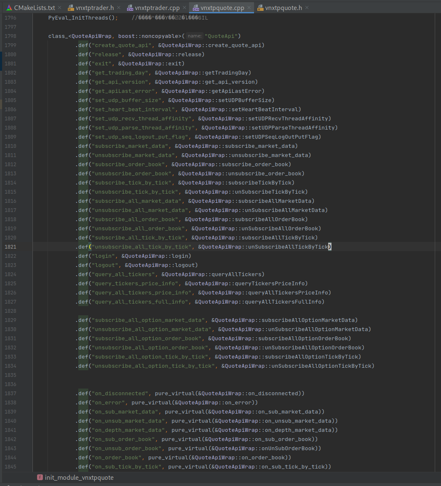

XTP Python Api 接口编译
XTP Python Api 接口编译
下载xtp官方提供的python接口: https://github.com/ztsec/xtp_api_python
简单介绍一下各个文件夹的作用（虽然里面有文档介绍了）
bin: 编译好的python接口和对应的demo
doc: 编译文档
source: 编译用到的代码
XTP_API_20200824_2.2.25.5: cxx xtp 接口
因为我不喜欢官方对python api的命名，所以我要自己改，然后重新编译
准备工作
doc 文件夹里有对应操作系统的编译文档，虽然不是很详细，但是也能看懂
我差不多把所有的 Python Api 都给修改了

对于非回调函数，只需要修改其def的函数名即可，如果是回调函数，则需要将C++中对应的函数也给修改了，否则会找不到这个函数
编译 boost python
按照文档所说的，首先要编译一份 boost python，直接去boost官网下载最新的boost源码，然后只编译python版本的。
生成b2编译工具, 指定你python命令所在的路径, 如果你不知道的话可以用 where python 来找到
1 | ./bootstrap.sh --with-libraries=/usr/bin/python3 |
然后编译.
toolset: 这里用的gcc，没试过可不可以用clang
include: 因为要用到Python.h，所以这里需要指定你在生成b2时设置的python对应的头文件路径，一般在你安装python的时候就会装好，如果没有装好，在ubuntu、debian系统你可以这样安装: sudo apt-get install python-dev -y
1 | ./b2 --toolset=gcc-10.2.0 --with-python include="/usr/include/python3.9" --with-thread --with-date_time --with-chrono |
不出意外就编译成功了，会在你stage文件夹里输出编译好的python lib
boost 这一步就算完成了
编译 xtp python
在 source 文件夹里有编译用到的源码，使用对应你系统版本的即可
编辑 CMakeLists.txt 修改几个地方
1、修改你python 的lib和头文件 所在目录，和上面编译boost时设置的一致
1 | # 设置Python所在的目录 |
2、然后是boost配置，主要修改boost所在路径(BOOST_ROOT) 以及boost的版本(如find_package中的1.75.0)，以及find_package中的python版本
1 | # 链接boost库，anaconda /python3用的是python3.6没有用Anaconda |
修改完cmake后，然后就直接编译
1 | mkdir build && cd build |
不出意外就会在lib文件夹中输出编译好的so
如果出意外了，那么就是find_package中python版本不对，或者你Boost版本不对之类的
反正就这几个地方，一个个检查就行了
测试
然后就写个demo测试一下
1 | import os |
你只需要把编译好的so放在demo.py一起即可
你可能会疑惑，为什么python可以import so，那是因为编译的时候使用到了Python.h
最后
blog: https://zckun.github.io/
公众号: the2hcode